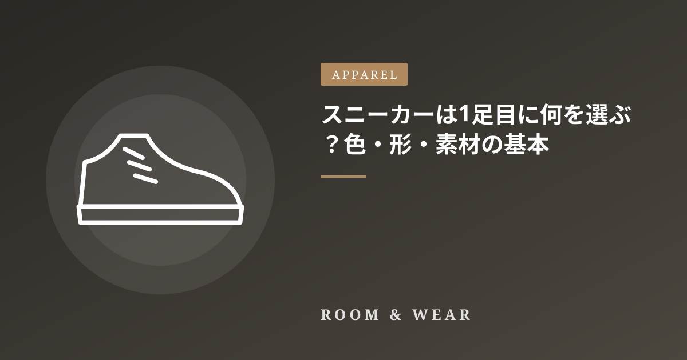

スニーカーは1足目に何を選ぶ？色・形・素材の基本

※この記事にはアフィリエイトリンクが含まれています（広告について）。
スニーカーはコーデの印象を左右する大事なアイテム。1足目は「主張が強すぎず、どんな服にも合わせられる」ことを優先すると、毎日の服選びがぐっと楽になります。
色：白か黒のどちらか
白スニーカーは全体を軽く、清潔感のある印象にしてくれます。春夏はもちろん、冬の暗くなりがちなコーデのはずしにもなります。
黒スニーカーは汚れが目立ちにくく、きれいめな服装にもなじみやすいのが特徴。通勤でも履くなら黒が便利です。
形：ローカットのシンプルなデザイン
1足目は、ロゴや装飾が控えめなローカットがおすすめです。ハイカットは足元にボリュームが出るので、合わせるパンツを選びます。また、ソール（靴底）が薄すぎず厚すぎないものの方が、スラックスにもデニムにも合わせやすくなります。
素材：レザーかキャンバスか
- レザー（合成皮革を含む）：きれいめな印象で、汚れを拭き取りやすい。オフィスカジュアルにも◎
- キャンバス（布）：軽くてカジュアル。価格が手頃なものが多く、洗えるものもある
サイズ選びの注意点
スニーカーはブランドによってサイズ感が違います。通販で買う場合は、商品ページのレビューで「大きめ」「小さめ」といった声をチェックし、可能なら普段履いている靴の実寸（かかとからつま先まで）を測っておくと失敗が減ります。
条件別に選んだ3点
記事で紹介した「白か黒」「ローカット」「シンプル」の条件に合うスニーカーを3足選びました。リンク先は記載の色が選ばれた状態です。サイズは移動先で選び直してください。仕様は2026年11月17日にAmazonの販売ページとメーカー公式ページで確認した内容です。編集部が実際に使用したレビューではありません。購入前に最新の情報をご確認ください。
| 商品 | 色 | アッパー素材 | 素材の確認先 | 向いている服装 |
|---|---|---|---|---|
| adidas スタンスミス JH7427 | 白 | 素材は販売元にご確認ください | — | カジュアル〜きれいめ |
| コンバース レザーオールスター Ⓡ OX | 黒 | レザー | 販売ページ・公式 | きれいめ・通勤カジュアル |
| コンバース ALL STAR OX | 黒 | キャンバス | 公式 | カジュアル |
白・定番
adidas スタンスミス JH7427（フットウェアホワイト/ワンダーホワイト/コアブラック）
- 品番
- JH7427（販売ページ記載）
- 留め方
- レースアップ
- リンク先のサイズ
- 28.0cm
- アッパー素材
- 素材は販売元にご確認ください
- 特徴
- 白をベースにしたローカットの定番デザイン。デニムにもスラックスにも合わせやすい。
- 向いている人
- 1足目に、どんな服にも合わせやすい白スニーカーが欲しい人
- 注意点
- 販売ページにアッパー素材の記載がなく、メーカー公式ページでも確認できなかったため、素材は掲載していません。スタンスミスは品番ごとに素材が異なるため、ほかの品番の情報は流用していません。リンク先は28.0cmのページなので、サイズを選び直してください。
- 価格
- 価格・在庫は変動するため掲載していません（販売ページの確認日：2026年11月17日）。
黒・きれいめ
コンバース レザーオールスター Ⓡ OX（ブラック）
- 公式品番
- 31311321（ブラック）
- アッパー素材
- レザー
- アウトソール
- ラバー
- 留め方
- レースアップ
- 耐水
- 非防水（販売ページ記載）
- 特徴
- 定番のオールスターをレザーにしたモデル。黒のレザーなので、通勤カジュアルにもなじみやすい。
- 向いている人
- 汚れが目立ちにくく、きれいめな服装にも合う黒を探している人
- 注意点
- アッパー素材は販売ページとコンバース公式ページ（品番31311321・ブラック）の両方でレザーと確認しました。販売ページには品番の記載がないため、商品名と色で公式品番と照合しています。リンク先は24.0cmが選ばれた状態なので、サイズを選び直してください。
- 価格
- 価格・在庫は変動するため掲載していません（販売ページの確認日：2026年11月17日）。
黒・カジュアル
コンバース ALL STAR OX（2025年リニューアルモデル・ブラック）
- 公式品番
- 31316891（ブラック）
- アッパー素材
- キャンバス
- アウトソール
- ラバー
- 留め方
- レースアップ
- 耐水
- 非防水（販売ページ記載）
- 特徴
- 2025年10月に履き心地を見直してリニューアルされた定番のオールスター。インソールを取り外せる仕様になった（公式ページ記載）。
- 向いている人
- 休日のカジュアルな服装で、気軽に履ける定番スニーカーが欲しい人
- 注意点
- アッパー素材は販売ページに記載がないため、コンバース公式ページのブラック（品番31316891）でキャンバスと確認しました。販売ページの「商品モデル番号」は同じモデルのホワイトの品番（31316892）が表示されています。リンク先は26.0cmが選ばれた状態なので、サイズを選び直してください。
- 価格
- 価格・在庫は変動するため掲載していません（販売ページの確認日：2026年11月17日）。
まとめ
1足目は「白か黒」「ローカット」「シンプルなデザイン」の3点を押さえれば、手持ちの服のほとんどに合わせられます。
この記事に関連するアイテムを探す
Amazonの検索結果ページに移動します。条件に合う商品を比較してお選びください。
- 白レザースニーカーAmazonで商品を探す
- 黒ローカットスニーカーAmazonで商品を探す
価格・在庫・仕様は変わることがあります。購入前にAmazonの商品ページで最新の情報をご確認ください。